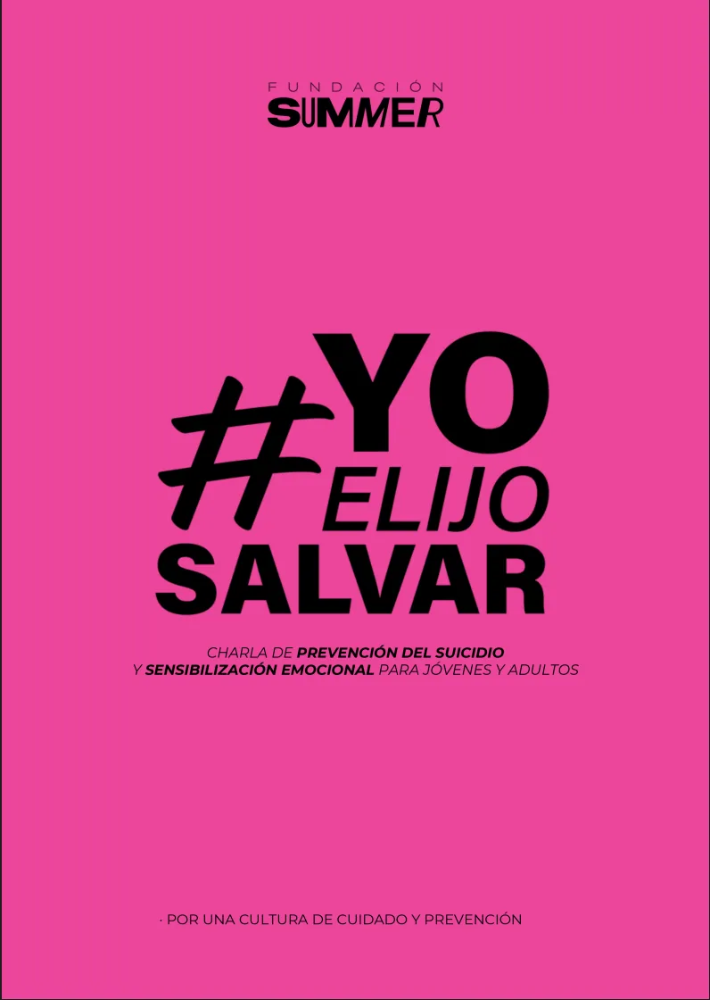
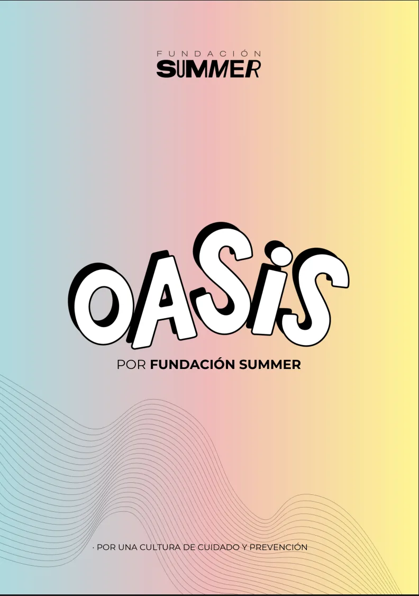
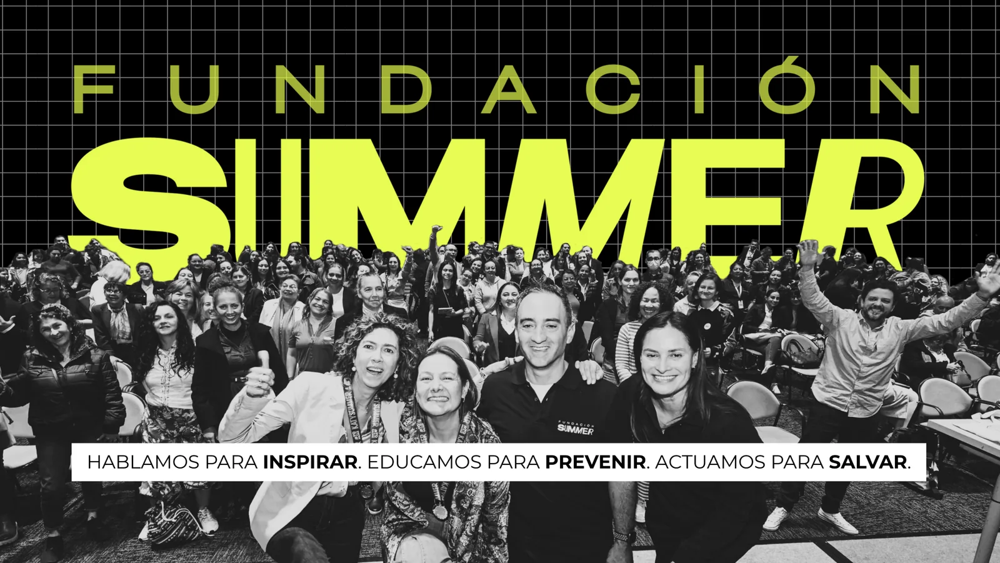
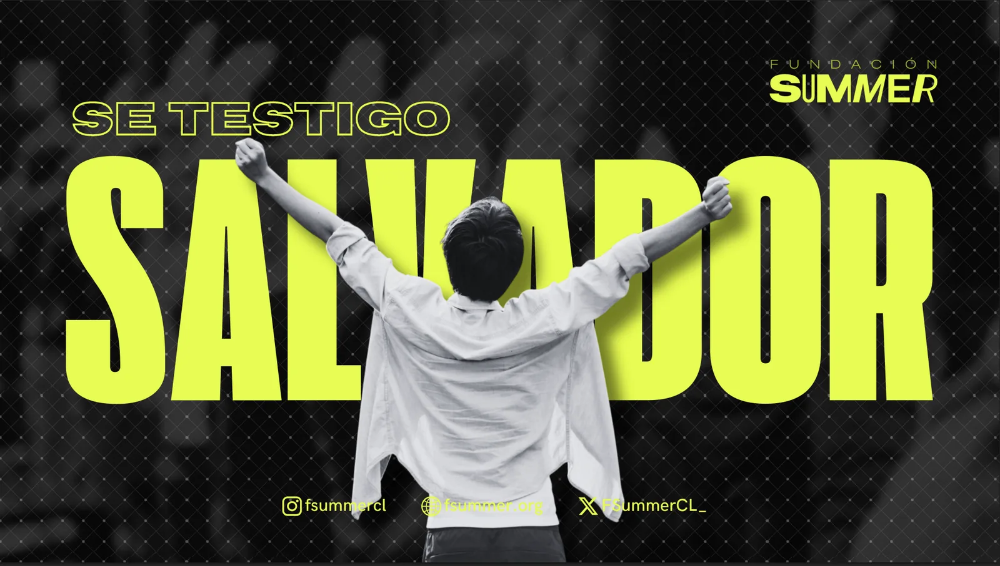

S/01
Estrategia de contenidos
El mapa completo: quién es tu audiencia, qué le importa y qué vas a publicar los próximos seis meses.
- Diagnóstico de marca
- Calendario editorial
- Tono de voz
Comunicadora digital
Estratega de contenidos
Vocería de marca
Con base en
Santiago
de Chile
2026
Coilla · Comunicación digital
Santiago · CL
Hago que tu marca diga algo que valga la pena escuchar.
Estrategia, contenido y vocería para marcas que están cansadas de publicar sin que pase nada.
Promesa
Ideas
*
7
Años en medios
*
40+
Marcas asesoradas
*
12
Rubros
*
3
Premios de contenido
01 — Cómo trabajo
Publicar todos los días no es una estrategia.
Antes de escribir un solo post definimos a quién le hablas, qué te hace distinta y cuál es la única cosa que necesitas que esa persona recuerde.
Después viene el calendario. Nunca antes.
02 — Las reglas de la casa
V/01
Si hay que explicar el chiste, no era el chiste. Primero que se entienda; después, que brille.
V/02
Cada decisión de contenido sale de algo que medimos. Cuando no hay dato, lo digo y probamos.
V/03
Prefiero tres publicaciones al mes que puedas mantener un año, antes que un plan diario que abandones en marzo.
V/04
Mi trabajo es que suenes más a ti, no a la agencia que te asesoró. Si tus clientes notan el cambio de voz, algo salió mal.
03 — Qué puedes contratar
S/01
El mapa completo: quién es tu audiencia, qué le importa y qué vas a publicar los próximos seis meses.
S/02
Yo me encargo de la operación mensual para que tú vuelvas a tu negocio.
S/03
Para fundadoras y profesionales que necesitan ser reconocidas en su rubro.
04 — Cuatro etapas, ocho semanas
Reviso lo que ya publicaste, hablo con tu equipo y mido de dónde llega tu audiencia hoy. Al final tienes un documento con lo que funciona, lo que no y por qué.
Definimos audiencia, mensaje central y los tres ejes de contenido que vas a sostener. Sin esto, todo lo que venga después es ruido ordenado.
Guiones, piezas y calendario cargado. Trabajamos con dos semanas de adelanto para que nunca publiques con apuro.
Reporte mensual con las métricas que importan para tu objetivo, no las que se ven bonitas. Ajustamos el plan con esos datos.
05 — Trabajo reciente
Video
Trabajos


